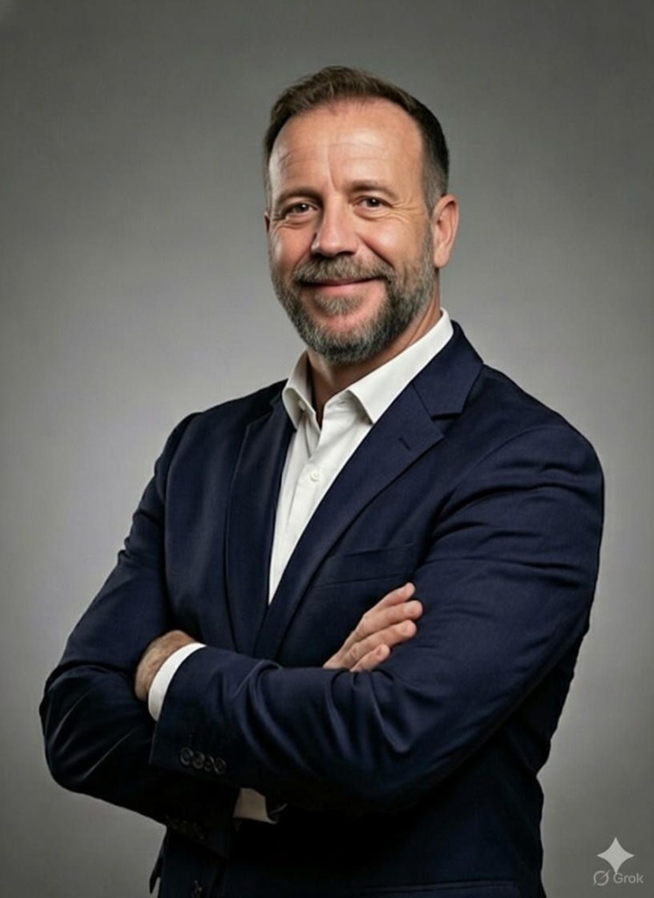

Miguel Castillo Perez
Technical Service Supervisor
✉️ miguelcp777@gmail.com
📞 +34 636 928 548
🔗 miguelcastilloperez
📍 Spain
Professional Summary
Detailed-oriented Supervisor of Technical Service with extensive experience in the medical device industry. Proven track record in leading high-performing teams, optimizing service delivery workflows, and leveraging data analytics (Python, SQL, Tableau) to drive operational excellence. Passionate about bridging the gap between technical operations and business strategy.
Professional Experience
Supervisor of Technical Service
2024 - Present
Johnson & Johnson Vision
- Lead the Technical Service team for Iberia, ensuring compliance with quality standards and operational KPIs.
- Implement data-driven strategies to reduce system downtime and improve customer satisfaction scores.
- Mentor and develop team members, fostering a culture of continuous improvement and technical excellence.
- Collaborate with cross-functional teams to streamline service processes and inventory management.
Technical Service Coordinator
2021 - 2024
Johnson & Johnson Vision
- Coordinated daily technical operations, managing field service schedules and resource allocation.
- Developed dashboards in Tableau to visualize service metrics and identify areas for efficiency gains.
- Acted as a primary escalation point for complex technical issues, ensuring rapid resolution.
- Supported the rollout of new product launches through technical training and service readiness planning.
Service Engineer
2017 - 2021
Johnson & Johnson / Abbott
- Performed installation, maintenance, and repair of advanced ophthalmic surgical systems.
- Delivered technical training to hospital staff and clinical engineers.
- Maintained high levels of customer satisfaction through proactive communication and service.
Technical Skills
Python
SQL
Tableau
Alteryx
Pandas
Data Visualization
CRM Systems
SAP
Leadership & Core Competencies
Team Leadership
Strategic Planning
Process Optimization
Cross-functional Collaboration
Problem Solving
Project Management